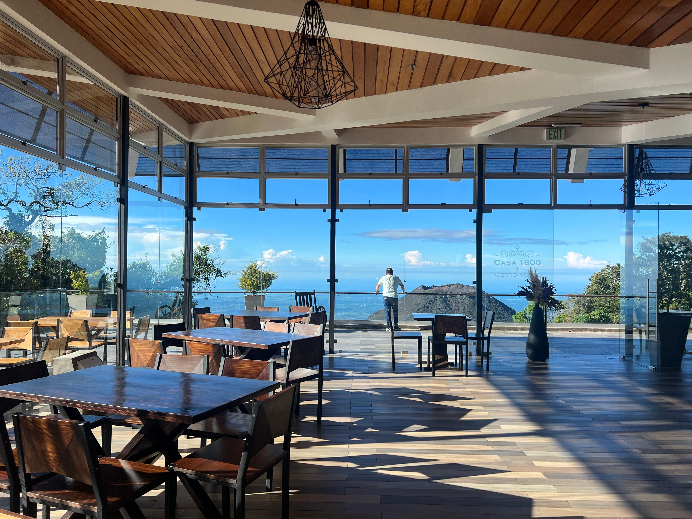
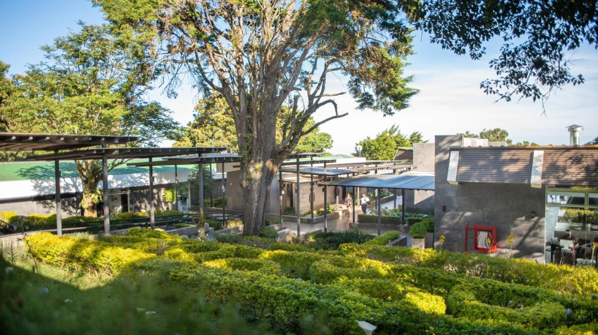
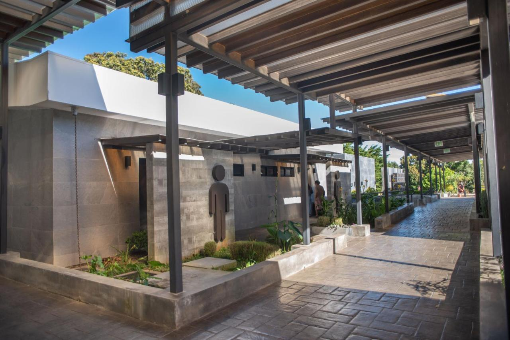
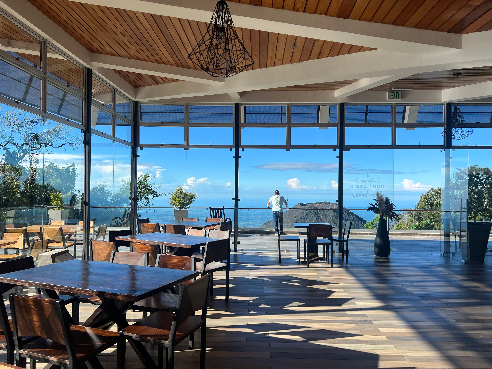
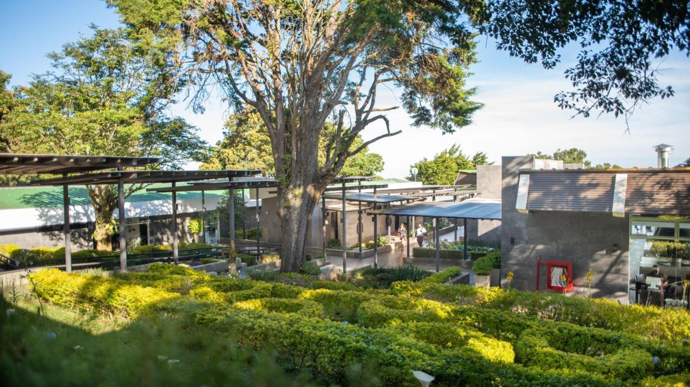
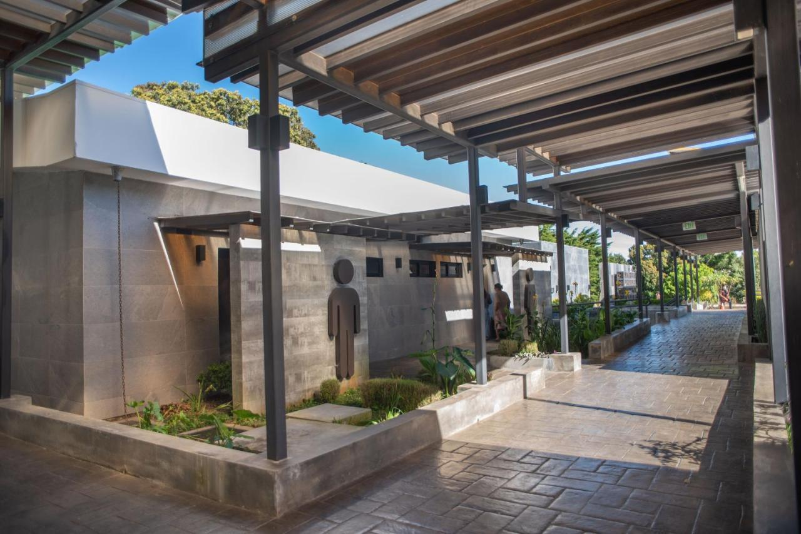

Descubre comodidad y elegancia en cada rincón Este alojamiento ofrece una experiencia única, combinando comodidad moderna con impresionantes vistas naturales de los volcanes Izalco y Santa Ana.
 





Casa 1800 Cerro Verde dispone de jardín, terraza, restaurante y bar en Cerro Verde. Este hotel de 5 estrellas tiene wifi gratis, servicio de habitaciones y mostrador de información turística. Hay parking privado gratis y el alojamiento ofrece servicio de traslado de pago para ir o volver del aeropuerto.
Casa 1800 Cerro Verde se encuentra en el Parque Nacional Cerro Verde, en el departamento de Santa Ana, El Salvador.
Comentarios